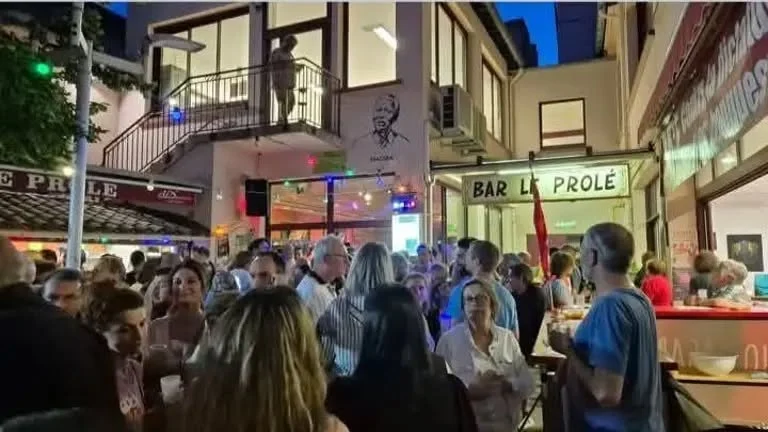

Publication d’archives
Assez de complaisance avec l’extrême droite !
Date indiquée par Facebook · 4 juin 2025
Texte conservé avec la publication
Assez de complaisance avec l’extrême droite !
Le 31 mai à Alès (Gard) , l’extrême droite a montré, une nouvelle fois, son sale visage. Ce n’est pas la première fois cette année que des groupuscules d’extrême droite s’en prennent à des locaux ou à des militant·es du Parti communiste français. La violence qui s’est déchaînée contre des familles venues simplement faire la fête au Prolé, bar associatif connu pour son engagement communiste, marque une étape supplémentaire dans la culture de la violence qu’entretiennent ces groupuscules et le danger qu’ils représentent pour la démocratie et toutes celles et ceux qui la défendent.
C'est pour dénoncer ces agressions et demander la dissolution de ces groupes néo-nazis qu'un rassemblement s'est tenu mardi 3 juin devant la préfecture des Deux-Sèvres à l'appel de la Fédération du PCF en Deux-Sèvres. Les activistes d’extrême droite doivent être jugés et leur organisation dissoute. Ils étaient de ceux qui ont défilé à Paris dernièrement, étendard nazi en main en toute impunité.
Assez de complaisance avec l’extrême droite !
Contexte du dossier
Le 2 juin, un appel annonce un rassemblement le lendemain à 18 heures devant la préfecture de Niort. Le compte rendu du 4 juin confirme l’initiative fédérale du 3, en solidarité après l’attaque du 31 mai contre le Prolé, lieu associatif communiste d’Alès. La demande de dissolution des groupes violents et de poursuites est une revendication, pas l’annonce d’une décision obtenue. Cette séquence relie une violence commise ailleurs à une réponse locale : ne pas laisser les familles et les militants visés affronter seuls l’intimidation.

Sources
Archive rouge · export Facebook · AR-0002-FB-01106
À lire aussi · 22 mars, combattre le racisme, conquérir l’égalité